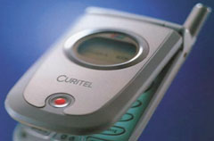

Галина Большова
Воспользовавшись заминкой 3G-систем (UMTS) на старте, на российский рынок в 2003 г. стремительно ворвалась новая технология - IMT-MC-450, сразу же предложив услуги, далеко превосходящие по скорости те, которые сегодня предоставляют своим пользователям операторы GSM/GPRS-сетей. Первые сети нового стандарта только-только приступили к обслуживанию абонентов Санкт-Петербурга и Москвы, а недавно созданная ассоциация IA-450 (International Association-450) уже планирует развернуть аналогичные сети в ряде других регионов России и сделать высокоскоростной стандарт IMT-MC-450 федеральным. И эти планы вполне реальны: на данный момент в РФ лицензии на развертывание сетей IMT-MC-450 (его еще называют CDMA-450) выданы 14 российским операторам, каждый из которых в то же время является оператором сетей NMT-450.
Вопрос о замене аналоговых сетей NMT-450 назрел давно: даже очень привлекательные тарифы не способны были оправдать низкий уровень сервиса. Первоначально в качестве наиболее вероятного преемника рассматривалась технология GSM 400. Она успешно прошла экспериментальную апробацию, но основные европейские производители GSM-оборудования (Ericsson и Nokia), прикинув масштабы рынка для диапазона 450 МГц, сочли его малоперспективным и отказались от развертывания производства. Другие компании также не проявили интереса к этой проблеме, и тогда у операторов сетей NMT остался единственный вариант модернизации - переход на стандарт IMT-MC-450.
О терминологииВ отечественной литературе наряду с названием CDMA-450 часто встречаются и другие термины - IMT-MC-450 и CDMA2000 1x RTT 450 МГц. Все они относятся к одной и той же технологии, но характеризуют ее с разных сторон. Так, аббревиатура CDMA-450 была введена еще в 1999 г. и подчеркивает тот факт, что при переходе от аналоговых сетей к цифровым метод радиодоступа меняется с NMT на CDMA, а цифра указывает на диапазон частот. Это наиболее общее обозначение, так как оно не зависит от конкретной версии стандарта CDMA, используемой при создании системы. Радиоинтерфейс IMT-MC (International Mobile Telecommunications - Multi-Carrier) включен Международным союзом электросвязи (МСЭ) в спецификации 3G-систем, известные как IMT-2000. Версию IMT-MC 450 для диапазона 450 МГц особенно "полюбили" в Минсвязи РФ, где до сих пор сохраняется сложное отношение к аббревиатуре CDMA. Напомним, что в России наложен запрет на использование CDMA (IS-95) в диапазоне 800 МГц, который в соответствии с европейскими нормами зарезервирован для будущих сетей цифрового телевидения. |
Выбор между Европой или Америкой? - Нет, борьба за выживание
Технологию IMT-MC-450 часто называют лазейкой или черным ходом для проникновения CDMA на российский рынок, где доминирующее положение в сотовой связи занимает стандарт GSM. И здесь уместен небольшой исторический экскурс.
Прежде всего заметим, что в силу территориального положения и исторически сложившихся связей Россия всегда тяготела к интеграции с Европой, а потому на "североамериканские" технологии (CDMA) официальные структуры всегда "смотрели косо". Ситуация усугублялась еще тем, что по случайности базовая технология CDMA (IS-95) работает в диапазоне 800 МГц, который, согласно европейским нормам, отводится под нужды цифрового телевидения (полоса 470-869 МГц). Это послужило сигналом к началу, не побоимся этого слова, гонений на CDMA.
Однако год назад кое-что изменилось. Многие наконец поняли, что в большинстве европейских стран сети 3G будут строить заново, в новом диапазоне частот. В России же можно - и даже выгоднее - обойтись "старым" ресурсом, так как помимо GSM у нас широко распространен и "североевропейский" стандарт NMT-450, который относительно просто, эволюционно трансформируется в IMT-MC-450. На практике такая эволюция предусматривает переходный период, когда обе сети будут работать параллельно, пока новая технология не вытеснит старую.
Перевод сетей NMT-450 в стандарт CDMA-450 - своеобразный "прыжок" через поколение, и этот факт порождает как преимущества, так и недостатки. Первые цифровые сети в диапазоне 450 МГц создаются не ради высокой прибыли - другой альтернативы у NMT-операторов просто нет. Чем дольше они будут поддерживать постепенно умирающий стандарт NMT-450, тем слабее будут становиться. Однако, чтобы не только сохранить позиции, но и добиться успеха на таком непростом рынке, как сотовая связь, нужны колоссальные усилия.
Прежде всего необходимо обеспечить плавную миграцию абонентов аналоговой сети в цифровую. Ни один из операторов NMT не планирует "закрыть" существующие сети, а некоторые даже заявляют, что готовы поддерживать их работу "до последнего абонента".
Очевидно и другое. Как бы успешно ни функционировала сеть IMT-MC-450, развернутая в одном, пусть даже самом престижном, регионе, конкурентоспособность ее остается невысокой. Для привлечения "масс" необходим роуминг в европейском или по крайней мере в национальном масштабе. А пока цифровые IMT-MC-сети диапазона 450 МГц действуют только в Санкт-Петербурге, Москве, Минске и Румынии.
Впрочем, ситуация не так уж безнадежна. Вслед за Москвой и Санкт-Петербургом в 2004 г. такие сети должны появиться и в ряде других регионов России. Да и в "мировом масштабе" есть перспективы: внедрение данной технологии запланировано в Швеции, Испании, Португалии, Франции, Китае, Индонезии.
Под флагом CDMAОдним из важных практических шагов, направленных на ускоренное внедрение CDMA-450 в России, стало переименование "Ассоциации NMT-450" в ассоциацию International Association 450. В нее вошли все российские региональные операторы, работающие в стандарте NMT-450, а также компании Delta Telecom и Skylink. Новой ассоциации предстоит решить немало задач, в частности, разработать генеральную схему создания и развития сети подвижной связи в диапазоне 450 МГц, а также подготовить необходимые нормативные документы, регламентирующие деятельность операторов.
|
Плюсы и минусы
Традиционно диапазон 450 МГц использовали операторы сотовой связи в зонах с малой интенсивностью трафика - в Скандинавии, Восточной Европе и некоторых странах Азии. Причина - относительно меньшие начальные затраты при развертывании сетей, поскольку распространение радиоволн на более низких частотах идет намного лучше и для покрытия одной и той же территории в диапазоне 450 МГц потребуется меньше базовых станций (БС). В частности, соотношение по необходимому количеству БС в одном географическом регионе (при прочих равных условиях) для диапазонов 1800/900/450 определяется как 5,5:2,2:1. Иначе говоря, для сети диапазона 450 МГц потребуется в 5,5 раз меньше БС, чем для сети, работающей на 1800 МГц. Что же касается районов массовой застройки, то в них более эффективны сети с большой пропускной способностью, работающие в диапазонах 900/1800 МГц.
Новые услуги IMT-MC-450 намного "круче" тех, что предоставляют операторы GSM/GPRS-сетей. Но пока они востребованы лишь в бизнес-кругах, где существует повышенный спрос на услуги передачи данных. Российский рынок фактически оказался не готов к столь стремительному развитию событий. Новая технология с высокой спектральной эффективностью и совершенными методами борьбы с многолучевыми искажениями одинаково эффективно может использоваться как в городских условиях, так и в сельской местности. И здесь главный сдерживающий фактор распространения - тарифы.
Парадоксальность ситуации состоит в том, что высокоскоростная передача данных (по достаточно высоким тарифным ставкам) наиболее востребована там, где потенциальная потребность в таких услугах выше, а платежеспособность - ниже, а именно в сельской местности. В районах с малой плотностью населения и слабой инфраструктурой проводной связи гораздо более важны высокоскоростные услуги, такие, как доступ в Интернет, телемедицина, дистанционное обучение и другие актуальные приложения, но разрыв в жизненном уровне населения осложняет распространение данной технологии на этом рынке.
Еще одна проблема IMT-MC-450 - частотный дефицит, и именно она порождает ограничения в пропускной способности. Концепция построения IMT-MC-450 основана на структуре сигналов CDMA20001x, передаваемых с чиповой скоростью 1,228 Мчип/c. Данную технологию, в отличие от двухдиапазонной GSM (900/1800 МГц), называют вседиапазонной, поскольку сигналы передаются в 11 полосах частот, причем для сетей связи CDMA-450 выделены частоты 453-457,4 МГц/463-467,4 МГц (табл. 1).
Таблица 1. Полосы рабочих частот мобильных и базовых станций, определенные в стандарте CDMA2000 (Release A) для класса 5 (450 МГц)
| Подкласс | Выделенные полосы частот, МГц | ||
| Мобильная станция | Базовая станция | ||
| A* | 0 | 452,500-457,475 | 462,500-467,475 |
| B* | 1 | 452,000-456,475 | 462,000-466,475 |
| C | 2 | 450,000-454,800 | 460,000-464,800 |
| D | 3 | 411.675-415.850 | 421,675-425,850 |
| E | 4 | 415,500-419,975 | 425,500-429,975 |
| F | 5 | 479,000-483,480 | 489,000-493,480 |
| G | 6 | 455,230-459,990 | 465,230-469,990 |
| H* | 7 | 451,310-455,730 | 461,310-465,730 |
| * Используются в сетях IMT-MC-450. | |||
Для предоставления услуг на одной несущей с учетом двух защитных интервалов по 0,26 МГц требуется полоса частот шириной 2х1,77 МГц; на двух несущих - 2х3,02 (2х1,25+ 0,52) МГц, на трех -- 4,275 МГц. Таким образом, в частотном диапазоне NMT-450 (2х4,5 МГц) можно реализовать систему с одной-двумя несущими при возможном параллельном функционировании "старой" сети NMT. Но в большинстве регионов России в настоящее время работа в полном диапазоне NMT-450 запрещена из-за проблем обеспечения электромагнитной совместимости с радиорелейными средствами связи. А значит, нет и необходимой полосы.
Тем не менее у технологии IMT-MC-450 есть огромный плюс - она обладает высокой спектральной эффективностью и обеспечивает пропускную способность системы примерно 26 эрлангов на сектор (на одну несущую) при передаче речи и до 350 кбит/с на сектор в режиме передачи данных. Следует заметить, что реальная скорость в радиоканале несколько ниже пиковой и не превышает 80 кбит/с (для сравнения: средняя скорость в сети российского оператора "Дельта-Телеком" - 70-80 кбит/c).
Максимальный радиус соты теоретически может составлять 100-120 км, однако достичь его на практике проблематично, так как при больших расстояниях резко ухудшаются условия распространения радиоволн и начинает сказываться кривизна поверхности Земли. Тем не менее эксперименты подтвердили, что радиус соты в цифровой сети CDMA-450 больше, чем в сети NMT-450, и, по данным компании Lucent Technologies, составляет около 60 км.
Оборудование для IMT-MC-450
Строительство первых сетей IMT-MC-450 в России велось на базе универсальной платформы Flexent производства Lucent Technologies (http://www.lucent.ru). Максимальная ее емкость составляет 192 канала на несущую (табл. 2). Модульная структура не только обеспечивает масштабирование, но и позволяет адаптировать платформу для различных радиоинтерфейсов (IS-95, cdma2000) и рабочих диапазонов частот. Кроме Lucent, оборудование инфраструктуры стандарта IMT-MC-1X (БС и коммутаторы) выпускают компании Huawei (http://www.huawei.ru) и ZTE (http://www.zte.ru).
Таблица 2. Основные характеристики платформы Flexent CDMA-450
| Параметр | Значение |
| Диапазоны частот, МГц | 453-457,5/463-467,5 |
| Конфигурация антенн | 2 антенны на сектор |
| Выходная мощность (на фланце антенны), Вт | 26 |
| Максимальная емкость | 192 канала (на несущую) |
| Скорость передачи данных, кбит/с | 144 (предельная 153,6) |
| Секторы | Omni/1, 2 или 3 сектора |
| Диапазон рабочих температур, °C | +5 -+40 |
| Габариты, мм | 1800 x 900 x 700 |
| Масса на несущую, кг | 363 (плюс 45,4 - для двух несущих) |
Одним из факторов, сдерживающих распространение сетей IMT-MC-450, на начальном этапе стал крайне ограниченный модельный ряд сотовых телефонов. Фактически в то время на российском рынке присутствовали всего лишь две модели - HX510B и S-200, причем обе от малоизвестных тогда на российском рынке южнокорейских производителей Curitel и Synertek.
Однако в последнее время положение меняется: на нашем рынке появилось около десятка фирм, уже производящих или планирующих выпуск терминалов данного стандарта, среди которых AnyData, Compal, Curitel, Huawei, Giga, Synertek, ZTE (табл. 3). Многие из моделей перечисленных компаний уже проходят сертификацию в России.
Таблица 3. Характеристики моделей терминалов
| Параметр | S-200 | HX510B | AMC 450 | ZTE-N500 |
| Производитель | Synertek | Hyundai Curitel | AnyData | ZTE |
| Дисплей, разрешение | 8 строк х 16 символов | 4 строки х 16 символов | 128x160 | 128x128 |
| Продолжительность разговора, мин | До 150 | До 120 | До 120 | 110 |
| Время ожидания, ч | До 170 | До 130 | До 120 | 130 |
| Емкость аккумулятора (Li-Ion), мАч | 540; 1000; 1500 | 950 | 650 | 700 |
| Размеры, мм | 110x44x21 | 124 x50x 20 | 179?34,2?8,9* | 85x46x19,5 |
| Масса, г | 119 | 145 | 81 | 85 |
| * В развернутом состоянии | ||||
Так, Synertek (http://www.synertek-wireless.com) наряду с уже известной потребителям моделью S-200 выпускает теперь две ее модификации: S-X с меньшими габаритами (100x40x17 мм) и ЖК-дисплеем - 128х80 точек (5 строк), а также S-XH с ЖК-дисплеем 128х160 точек и встроенной камерой (MPEG4). Самый малогабаритный из имеющихся на рынке терминалов этого стандарта - телефон AMC 450, разработанный компанией AnyData (см. табл. 3). Кроме того, следует отметить, что первые модели аппаратов не имели системы аутентификации на базе интеллектуальной карточки R-UIM (аналог SIM-карты, но с более высокой степенью защищенности), а практически все новые телефоны IMT MC-450 поддерживают R-UIM.
Еще одна проблема производства абонентского оборудования связана с роумингом, поскольку количество сетей IMT-MC-450 пока невелико. Возможно, переход к двухмодовым трубкам CDMA-450/800 или CDMA-450/2000 позволил бы частично решить данную проблему, но для этого требуется, чтобы технология CDMA получила в России и другие (не только 450 МГц) диапазоны частот. Однако пока рассчитывать на такую "щедрость" не приходится.
Многие зарубежные эксперты говорят о создании двухмодовых трубок типа CDMA-450/GSM 900, однако подобные модели окажутся существенно дороже, поэтому пока для нашей страны данный вариант не рассматривается.
|  | Трубка HX-550C производства Curitel.
|
Каковы перспективы?
Создание единого операторского пространства - необходимое, но не достаточное условие успеха новой технологии в России. То, что с первого взгляда кажется достижением, может оказаться фактором сдерживания: 3G-услуги пришли в Россию с опережением, фактически перескочив через поколение. Именно поэтому на первом этапе они ориентированы не на массовый рынок, а на корпоративных пользователей. Последних должна привлечь не только высококачественная голосовая связь, но и уникальные для российского потребителя возможности передачи данных: высокоскоростной доступ в Интернет, развлекательные приложения, услуги телематических сервисов и, наконец, мобильная коммерция. Однако есть опасения, что вся "широта применения" сведется к традиционной передаче коротких сообщений и голосовой связи (что и наблюдается сейчас), а потому пользователи могут просто не заметить разницы между существующими GSM/GPRS- и новыми IMT-сетями.
Необходимо отметить, что даже в перспективе из-за ограниченного частотного ресурса объем этого сегмента рынка весьма невелик (5% от общего объема). По оценкам аналитиков, количество абонентов IMT-MC-450 в России по состоянию на конец 2003 г. составляет от 70 до 100 тыс. В 2004 г. эти цифры могут заметно увеличиться, достигнув к концу года 400 тыс. Но это весьма оптимистический прогноз для рынка, где традиционно доминирует GSM. Конечно, ситуация может измениться, если в IMT-MC-450 будут предложены новые и привлекательные по тарифам услуги.
Тем не менее вызов брошен, и у операторов NMT-450 появился уникальный шанс превратить самые отсталые в России аналоговые сети в самые передовые. Теперь ответный ход за монополистами российского рынка - операторами GSM-сетей. Удастся ли им вытеснить новоявленного конкурента из деловых центров в его "законную" нишу - обеспечение связи в сельской местности и удаленных районах? Подождем - время покажет.
GSM + CDMA = ?В давнем споре GSM и CDMA появилось "новое течение", направленное на организацию их взаимодействия. Ведущие производители оборудования CDMA сегодня позиционируют эти сети на рынке не как конкурирующие, а как взаимодополняющие, считая это решение единственно верным в сложившейся ситуации. "В русле" этого течения - и новая интегральная технология радиодоступа, обеспечивающая возможность организации связи между сетями GSM и CDMA2000, которая получила название GSM1x. Она дает возможность операторам сетей GSM/GPRS передавать данные в диапазоне частот 900 МГц со скоростью до 307 кбит/c на сектор при ширине полосы 1,25 МГц. В сетях GSM1x могут использоваться как двухрежимные терминалы GSM 900/CDMA2000, так и терминалы CDMA2000 с R-UIM интерфейсом. Такое решение дает возможность создать комбинированную сеть, где должен поддерживаться прозрачный режим информационного обмена между GSM и GSM1x и CDMA-сетями. Ожидается, что первые сети, работающие в стандарте GSM1x, появятся в Китае. |